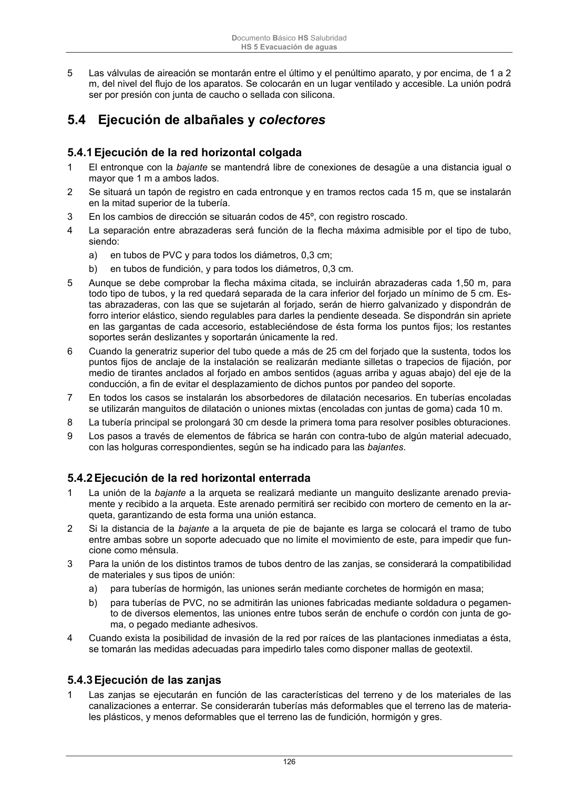

DB-HS · Fragmento de PDF p126 · versión 2022-06-14 · capa oficial
Formatos: JSON compacto · Markdown · PDF fuente
Ámbito del documento · texto del ámbito · documento y tablas
ID técnico a0284 · PDF pág. 126 · jerarquía no validada por persona · no es capítulo: sin_linea_de_encabezado · padre: raíz · literal original en el contenido: «5.4.2 Ejecución de la red horizontal enterrada»
5.4.2 Ejecución de la red horizontal enterrada 1 La unión de la bajante a la arqueta se realizará mediante un manguito deslizante arenado previa- mente y recibido a la arqueta. Este arenado permitirá ser recibido con mortero de cemento en la ar- queta, garantizando de esta forma una unión estanca. 2 Si la distancia de la bajante a la arqueta de pie de bajante es larga se colocará el tramo de tubo entre ambas sobre un soporte adecuado que no limite el movimiento de este, para impedir que fun- cione como ménsula. 3 Para la unión de los distintos tramos de tubos dentro de las zanjas, se considerará la compatibilidad de materiales y sus tipos de unión: a) para tuberías de hormigón, las uniones serán mediante corchetes de hormigón en masa; b) para tuberías de PVC, no se admitirán las uniones fabricadas mediante soldadura o pegamen- to de diversos elementos, las uniones entre tubos serán de enchufe o cordón con junta de go- ma, o pegado mediante adhesivos. 4 Cuando exista la posibilidad de invasión de la red por raíces de las plantaciones inmediatas a ésta, se tomarán las medidas adecuadas para impedirlo tales como disponer mallas de geotextil.

PDF fuente redistribuible: copia fiel enlazada en esta página (SHA256 verificado).